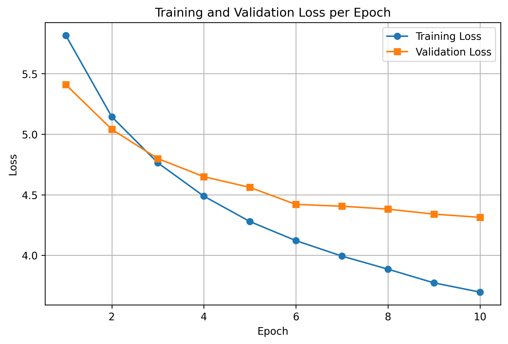
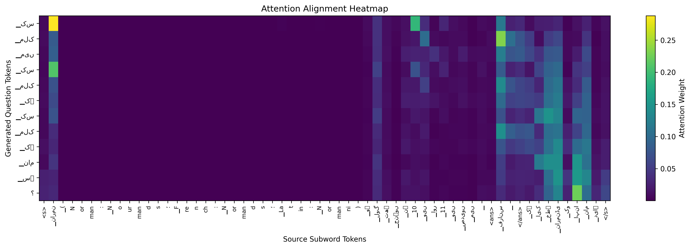

Goal: Given an Urdu sentence with an answer span marked by <ans> ... </ans>, generate a coherent, answerable interrogative question.
nn.LSTM, nn.Linear, and nn.Embedding primitives.Trained on UQA (translated SQuAD 2.0) and benchmarked out-of-domain on Wiki-UQA (native Urdu Wikipedia).
| Split | Raw Rows | Filtered Pairs | Mean Src / Tgt |
|---|---|---|---|
| UQA Train | 124,745 | 75,067 | 32.59 / 11.92 words |
| UQA Valid | 16,824 | 10,018 | 33.23 / 12.29 words |
| Wiki-UQA (OOD) | 210 | 177 | 31.69 / 11.42 words |
Filter: Source ≤ 60 words, Target ≤ 25 words. Sentence delimiters: U+06D4 (۔), U+061F (؟), !
Trained an 8,000-subword Unigram model. Decomposes complex Urdu inflections into roots and suffixes:
پڑھ (stem) + ا (masculine aspect) فرانس (France) + یسی (demonym) + وں (plural) 10 + ویں (ordinal suffix)
Special tokens registered: <pad>=0, <unk>=1, <s>=2, </s>=3, <ans>=4, </ans>=5.
pack_padded_sequence to prevent zero-padding traversal in backward pass.bridge_h0, bridge_h1, bridge_c0, bridge_c1) project bidirectional states without layer collapse.-inf pad masking.
Degenerative Loop Elimination: Naive decoding produces loops like کے ساتھ ساتھ ساتھ. We engineered:
| Dataset / Search | BLEU-4 | ROUGE-L | PPL | <unk> |
|---|---|---|---|---|
| UQA Valid (Greedy) | 4.26 | 0.2510 | 74.44 | 0.10% |
| UQA Valid (Beam k=3) | 4.14 | 0.2539 | 74.44 | 0.28% |
| Wiki-UQA (Greedy) | 4.85 | 0.2396 | — | 0.43% |
| Wiki-UQA (Beam k=3) | 5.19 | 0.2467 | — | 0.07% |
Human Evaluation (50 Samples, 2 Blind Annotators):

The model aligns question words (e.g. کس ملک or کب) directly to the answer tags and context entities.
Key Finding: Model excels at کب (>90% accuracy for dates/numbers) and کس نے (people/leaders). Beam search boosts global fluency; trigram blocking prevents stuttering loops.